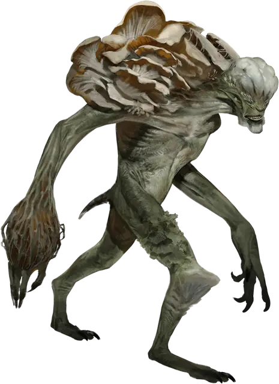

Споровый слуга миконидов
Myconid Spore Servant
Среднее или Маленькое Растение, без мировоззрения

Класс Защиты 13 Инициатива +1 (11)
Хиты 37 (5к8 + 15)
Скорость 20 футов
| мод | спас | ||
|---|---|---|---|
| СИЛ | 16 | +3 | +3 |
| ЛОВ | 12 | +1 | +1 |
| ТЕЛ | 16 | +3 | +3 |
| мод | спас | ||
|---|---|---|---|
| ИНТ | 2 | −4 | −4 |
| МДР | 6 | −2 | −2 |
| ХАР | 1 | −5 | −5 |
Иммунитеты Яд; Испуганный, Ослеплённый, Отравленный, Очарованный, Парализованный
Чувства пассивное Восприятие 8, Слепое зрение 30 футов
Языки Телепатия 30 фт.
Опасность 1 (200 опыта; БВ +2)
Действия
Размашистый удар. Бросок рукопашной атаки: +5, досягаемость 5 фт. Попадание: 6 (1к6 + 3) Дробящего урона плюс 2 (1к4) урона Ядом.
Бонус мастерства +2
Среда обитания Подземье
Сокровища Любые
Микониды
Переносчики спор
Микониды обитают в отдалённых глубинах Подземья, где разрастается плесень и грибы. Эти ходячие грибные создания заботятся о своих святилищах и стараются не втягивать себя в распри иных народов. Для общения, тревожных сигналов и самозащиты они используют особые споры. Когда микониды встречают других созданий, они выпускают споры мыслесвязи, что позволяют всем поблизости телепатически делиться мыслями. И всё же намерения миконидов остаются загадкой для большинства тех, кто не принадлежит к грибному роду.
Споровые слуги — это тела мертвецов, оплетённые грибницей и вновь оживлённые спорами верхновного миконида. Эти заражённые грибами трупы служат продолжением воли своего владыки и беспрекословно исполняют его приказы.